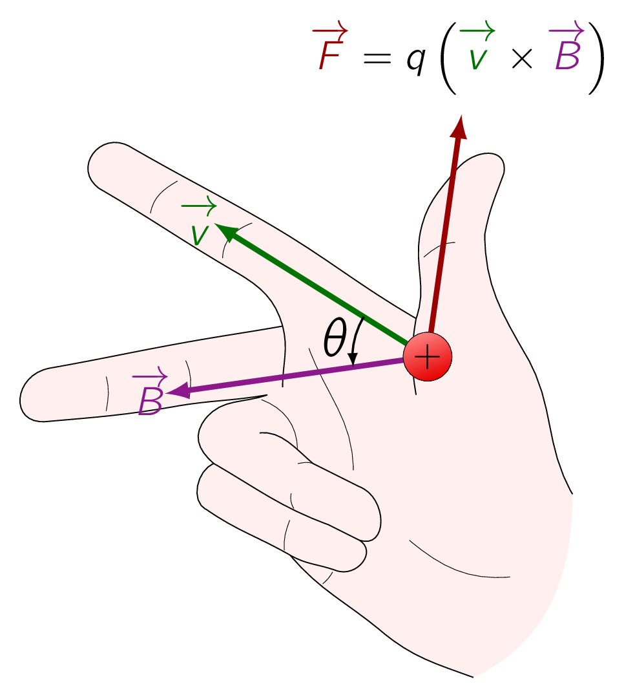
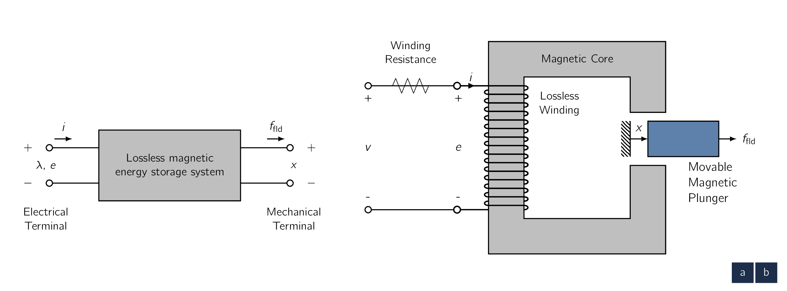
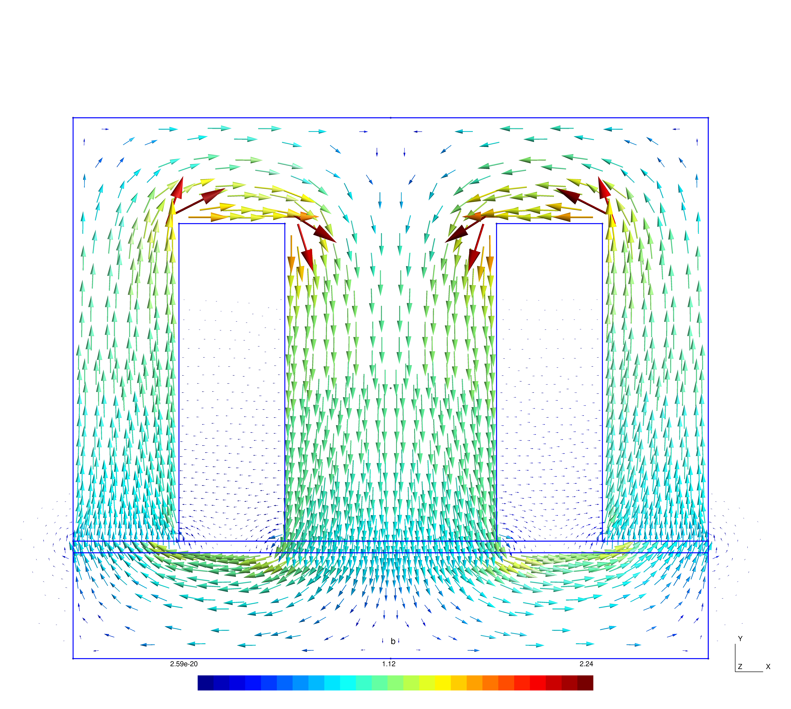
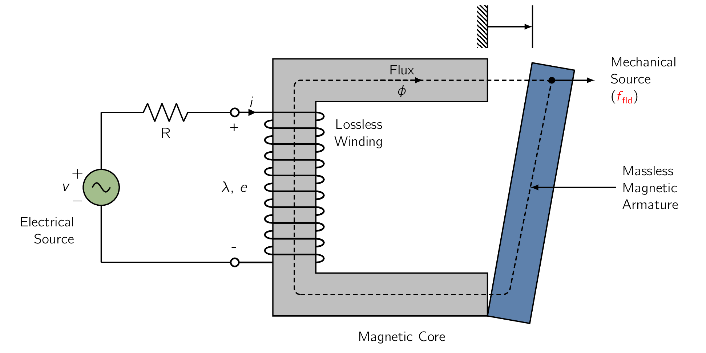

As with anything electromagnetic, it is worth starting with the Lorentz force law, which gives the force on a particle of charge in the presence of both electric and magnetic fields. [60][60]Hendrik Antoon Lorentz (1853 - 1928) Dutch theoretical physicist who shared the 1902 Nobel Prize in Physics with Pieter Zeeman for their discovery and theoretical explanation of the Zeeman effect. He derived the Lorentz transformation of the special theory of relativity, as well as the Lorentz force.
| (3.1) |
where is the force acting on the charge (), is the charge traveling in the field(s) (), is the electric field (), is the magnetic field () and is the velocity of the particle relative to the magnetic field ()
Therefore, if we were to assume the charge is travelling in a pure electric-field system (), the force is determined simply by the charge on the particle and the electric field:
| (3.2) |
As we can see from above, the force acts in the direction of and is independent of any particle motion. However, in pure magnetic-field systems (), the situation is somewhat more complex. Here the force is represented as:
| (3.3) |
and is determined by the magnitude of the charge on the particle and the magnitude of the field as well as the velocity of the particle. [61] The operator here is called the cross-product.
Direction of the force is always perpendicular to the direction of both the particle motion and that of the magnetic field indicated by the vector cross product in Eq. (3.3) .

In Eq. (3.3) The magnitude of this cross product is equal to the product of the magnitudes of and and the sine of the angle between them:
with its direction can be found from the right-hand rule, which states that
as shown in Fig. 3.2.
For situations where large numbers of charged particles are in motion, we can rewrite Eq. (3.1) in terms of the charge density () as: [62] These terms and their mathematical underpinnings will be discussed in sufficient detail in the course M.Sc Electrodynamics.
| (3.4) |
where the subscript indicates is a force density (). A final terminology to consider is the product is known as the current density ().
| (3.5) |
The magnetic-system force density corresponding to Eq. (3.3) can then be written as:
| (3.6) |
For currents flowing in conducting media, Eq. (3.6) can be used to find the force density acting on the material itself.
Considerable amount of physics is hidden in this seemingly simple statement, as the mechanism by which the force is transferred from the moving charges to the conducting medium is a complex one.
For situations in which the forces act only on current-carrying elements and which are of simple geometry, Eq. (3.6) is generally the simplest and easiest way to calculate the forces acting on the system. Unfortunately, very few practical situations fall into this class.
In fact, most electromechanical-energy-conversion devices contain magnetic material where forces act directly on the magnetic material and clearly cannot be calculated from Eq. (3.6)
Unfortunately, as with everything which is more than an abstract imaginary ball in the land of theory, the techniques for calculating the detailed, localised forces acting in systems with magnetic materials are extremely complex and require detailed knowledge of the field distribution throughout the structure. [63] Solutions may not provide closed form descriptions and for complex geometries, it is better to use FEMFinite Element MethodA popular numerical technique for solving differential equations in engineering and physics, breaking complex shapes into simpler elements, and turning continuous problems into algebraic equations. software to deal with them.
Fortunately, most electro-mechanical energy conversion devices are constructed of rigid, non-deforming structures.
The performance of these devices is typically determined by the net force, or torque, acting on the moving component and it is rarely necessary to calculate the details of the internal force distribution.
Under these assumption and the simplification, to understand the behaviour of rotating machinery, a simple physical picture is quite useful.
To start simple, we assume both the rotor and stator have their own magnetic field [64] produced in many machines by currents in windings on the rotor, or through PMPermanent MagnetAn object made from a material that is magnetized and creates its own persistent magnetic fields. and similarly with the stator:
Just as a compass needle tries to align with the earth’s magnetic field, these two (2) sets of fields [65] To reiterate, these fields are rotor, and stator respectively. attempt to align, and torque is associated with their displacement from alignment.
In a motor, the stator magnetic field rotates ahead of that of the rotor, pulling on it and performing work, whereas the opposite is true for a generator, in which the rotor does work on the stator.
We begin formalizing, we start with the principle of conservation of energy and describe it using the following theory:
For isolated systems with clearly identifiable boundaries, this fact permits us to keep track of energy in a simple fashion:
The net flow of energy into the system across its boundary is equal to the sum of the time rate of change of energy stored in the system.
The Energy Method
The technique for calculating forces and torques in the electromechanical energy-conversion process is known as the energy method and is based on the principle of conservation of energy. This result, which is a statement of the first law of thermodynamics, is quite general and allow us to apply to electro-mechanical systems whose predominant energy-storage mechanism is in magnetic fields.
In these systems, we can account for energy transfer as:
| (3.7) |
Eq. (3.7) is written so, for a motor, both the electric and mechanical energy terms have positive values, and in case of a generator, both the terms have negative values. Either case, the heat generation within the system results in a flow of thermal energy out of the system.

In the systems which we consider in this chapter, the conversion of energy into heat occurs by the following mechanisms:
- Ohmic heating
-
Caused by current flow in the windings of the electric terminals.
- Mechanical friction
-
Caused the motion of components forming the mechanical terminals.
For electromechanical system, it is generally possible to mathematically separate these loss mechanisms from the energy-storage mechanism.
In such cases, the interaction between the electric and mechanical terminals, [66] i.e., the electromechanical energy conversion. occurs through the medium of the magnetic stored energy and the device can be represented as a lossless energy-storage system with electric and mechanical terminals as shown in Fig. 3.3a.
In systems which can be modelled in this fashion, loss mechanisms can be represented by external elements connected to these terminals:
Fig. 3.3b shows an example of such a system:
Fig. 3.3a can be readily generalised to situations with any number of electric or mechanical terminals.
Fig. 3.3a represents a system in which there is stored magnetic energy and the magnetic field serves as the coupling medium between the electric and mechanical terminals.
This train of thought can be applied equally well to a system with stored electric energy. The ability to identify a lossless-energy-storage system is the essential idea of the energy method and is important to recognise that this is done mathematically as part of the modeling process.
It is NOT possible, to take the resistance out of windings or the friction out of bearings. Instead we are making use of the fact that a model in which this is done is a valid representation of the physical system.
For a lossless energy-storage system, Eq. (3.7) can be written as:
| (3.8) |
where is the electric input power (), is the mechanical output power () and is the rate-of-change of the magnetic stored energy with respect to time ().
As can be seen in Fig. 3.3a, on the LHSLeft Hand SideLeft Hand Side, the electric terminal has two (2) terminal variables,
-
a voltage source (), and
-
a flowing current (),
whereas on the RHSRight Hand SideRight Hand Side, the mechanical terminal, also has two (2) terminal variables:
-
a force (), and
-
a position ().
The electrical input power () can be written as the product of the voltage and the current :
| (3.9) |
and the mechanical output power can be written as the product of the force and the velocity [67] the time derivative of the position . as:
| (3.10) |
Re-arranging Eq. (3.8) and substituting Eq. (3.9) and Eq. (3.10) gives:
| (3.11) |
For a magnetic-energy-storage system, the electrical terminal typically represents a winding such as that shown in Fig. 3.3b. Recognising that, from Eq. (1.22) , the voltage at the terminals of a lossless winding is given by the time-derivative of the winding flux linkages:
| (3.12) |
Substitution into Eq. (3.11) and multiplying by gives us a useful relation:
| (3.13) |
As we shall see later, Eq. (3.13) permits us to solve for the force simply as a function of the flux linkage and the mechanical terminal position .
This result comes about as a consequence of our assumption that it is possible to separate the losses out of the physical problem, resulting in a lossless energy-storage system, as in Fig. 3.3a.
Eq. (3.11) and Eq. (3.13) form the basis for the energy method. This technique is quite powerful in its ability to calculate forces and torques in complex electromechanical-energy-conversion systems.
This powerful technique comes at the expense of a detailed picture of the force-producing mechanism as the method merely abstracts the forces as the forces themselves are produced by such well-known physical phenomena as the Lorentz force on current carrying elements, described by Eq. (3.6) , and the interaction of the magnetic fields with the dipoles in the magnetic material.
Previously we focused mostly with fixed-geometry magnetic circuits such as those used for
transformers and inductors. Energy in those devices is stored in the leakage fields and to some extent in the core
itself. [68] 
In those circuits, the stored energy does NOT enter directly into the transformation process.
In this chapter we are dealing with energy-conversion systems where:
This field acts as the energy-conversion medium, and its energy is the reservoir between the electric and mechanical systems. To get a better understanding of the above description, consider the electromagnetic relay shown schematically in Fig. 3.4.

The resistance of the excitation coil is shown as an external resistance () and the mechanical terminal variables are shown as a force () produced by the magnetic field directed from the relay to the external mechanical system and a displacement ().
Mechanical losses can be included as external elements connected to the mechanical terminal..
Similarly, the moving armature is shown as being massless, its mass represents mechanical energy storage and can be included as an external mass connected to the mechanical terminal. As a result, the magnetic core and armature constitute a lossless magnetic-energy-storage system as is represented schematically in Fig. 3.3a.
This relay structure is essentially the same as the magnetic structures we looked in Magnetic Circuits and Materials in which we saw that the magnetic circuit of Fig. 3.4 can be described by an inductance () which is a function of the geometry of the magnetic structure and the magnetic permeabilities of the various system components.
EECElectromechanical Energy ConversionThe process of changing electrical energy into mechanical energy, or mechanical energy into electrical energy, using a magnetic field as a coupling medium devices contain air gaps in their magnetic circuits to separate the moving parts and, as discussed in Magnetic Circuits and Materials, in most such cases the reluctance of the air gap is much larger than that of the magnetic material. Therefore the predominant energy storage occurs in the air gap, and the properties of the magnetic circuit are determined by the dimensions of the air gap. Due to the simplicity of the resulting relations, magnetic non-linearity and core losses are often neglected in the analysis of practical devices. The final results of such approximate analyses can, if necessary, be corrected for the effects of these neglected factors by semi-empirical methods. Consequently, analyses are carried out under the assumption that the MMFMagneto-motive ForceThe magnetic pressure which drives magnetic flux in a magnetic circuit, and is the work done to move a unit magnetic pole. and flux are directly proportional for the entire magnetic circuit.
Therefore the flux linkages () and current () are considered to be linearly related by an inductance which depends solely on the geometry and hence on the armature position ().
| (3.14) |
where it can be seen that the inductance () is dependent on . Given that the magnetic energy storage system is lossless, we can state the system is a conservative system and therefore the value of is uniquely specified by the values of both and .
and are therefore referred to as state variables given their values uniquely determine the state of the system.
Given the magnetic force has been defined as acting from the relay upon the external mechanical system, is defined as the mechanical energy output of the relay. To revisit an equation we have just derived:
| (3.15) |
we see the stored energy () being uniquely determined by the values of and , is the same regardless of how and are brought to their final values.
Consider Fig. 3.5, in which two (2) separate paths are shown over which Eq. (3.15) can be integrated to find at the point (, ).
- Path 1
-
The general case and is difficult to integrate unless both and are known explicitly as a function of and .
- Path 2
-
gives the same result and is much easier to integrate as the integration of Eq. (3.15) is path independent,
From Eq. (3.15) we see that:
| (3.16) |
Please observe that on Path 2a, and . [69] since and there can be no magnetic force in the absence of magnetic fields. Therefore from Eq. (3.15) , on Path 2a. On Path 2b, , and, from Eq. (3.15) , Eq. (3.16) reduces to the integral of over Path 2b, for which . Therefore we simplify the equation as:
| (3.17) |
For a linear system in which is proportional to , as in Eq. (3.14) , Eq. (3.17) gives
| (3.18) |
Point is arbitrary. The expression for of Eq. (3.18) is valid for all points .
To emphasise this point, Eq. (3.18) can be re-written as
| (3.19) |
It can be shown, the magnetic stored energy can also be expressed in terms of the energy density of the magnetic field integrated over the volume of the magnetic field.
In this case
| (3.20) |
For soft magnetic material of constant permeability (), this reduces to
| (3.21) |
In this section we have seen the relationship between the magnetic stored energy and the electric and mechanical terminal variables for a system which can be represented in terms of a lossless-magnetic-energy-storage element.
If we had chosen for our example a device with a rotating mechanical terminal instead of a linearly displacing one, the results would have been identical except that force would be replaced by torque and linear displacement by angular displacement.
-
¶
- MMFMagneto-motive Force
The magnetic pressure which drives magnetic flux in a magnetic circuit, and is the work done to move a unit magnetic pole.
-
¶
- EECElectromechanical Energy Conversion
The process of changing electrical energy into mechanical energy, or mechanical energy into electrical energy, using a magnetic field as a coupling medium
-
¶
- RHSRight Hand Side
Right Hand Side
-
¶
- LHSLeft Hand Side
Left Hand Side
-
¶
- PMPermanent Magnet
An object made from a material that is magnetized and creates its own persistent magnetic field
-
¶
- FEMFinite Element Method
A popular numerical technique for solving differential equations in engineering and physics, breaking complex shapes into simpler elements, and turning continuous problems into algebraic equations.